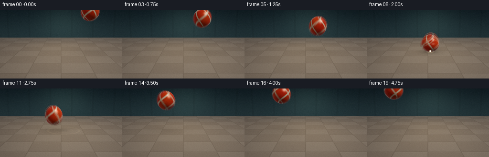
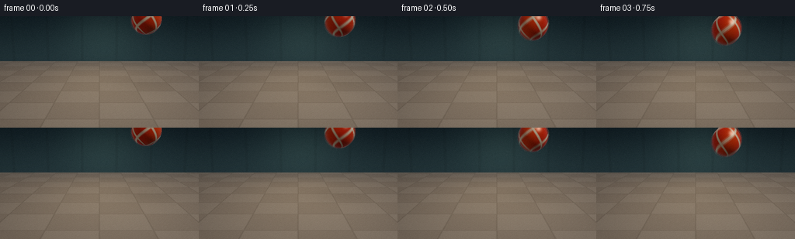
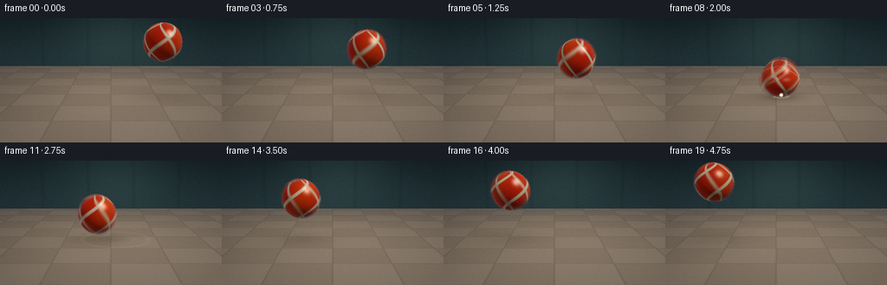
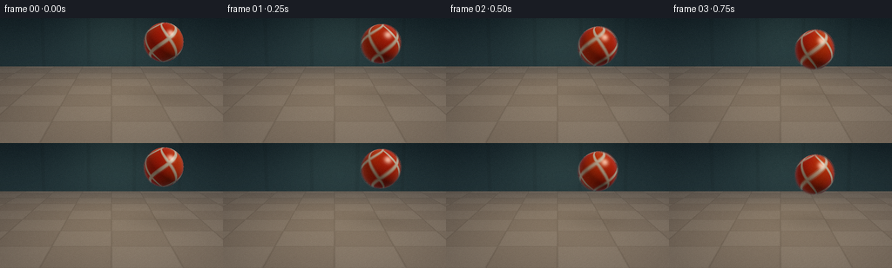

CODING AGENTS AS PIXEL WORLD MODELS
traex/DeepSeek-V4.1-Flash · phygen_026
点击播放 · 原生 RGB 像素
逐轮保存的候选
回放视频、检查图与代码变化。
每份候选均可单独播放。实际图片检查记录在下方工具轨迹中。
候选 01播放与检查图
点击播放 · 原生 RGB 像素

展开代码变化
--- 上一保存版本
+++ 本次保存版本
@@ -0,0 +1,470 @@
+"""Procedural RGB animation of a rubber ball bouncing on a studio floor."""
+
+from pathlib import Path
+import math
+
+import numpy as np
+from PIL import Image, ImageFilter
+
+import artifact_io
+
+
+WIDTH = 256
+HEIGHT = 144
+FRAMES = 20
+FPS = 4.0
+SSAA = 2
+
+OUT_W = WIDTH * SSAA
+OUT_H = HEIGHT * SSAA
+
+IMPACT_TIME = 2.0
+REBOUND_TIME = 2.50
+BALL_RADIUS = 0.38
+FLOOR_Y = 0.0
+WALL_Z = 5.0
+
+
+def normalize(vector):
+ return vector / np.linalg.norm(vector, axis=-1, keepdims=True)
+
+
+def smoothstep(edge0, edge1, value):
+ x = np.clip((value - edge0) / (edge1 - edge0), 0.0, 1.0)
+ return x * x * (3.0 - 2.0 * x)
+
+
+def mix(a, b, amount):
+ amount = np.asarray(amount)
+ if np.ndim(b) == 1 and amount.ndim == 1:
+ amount = amount[..., None]
+ return a * (1.0 - amount) + b * amount
+
+
+def camera_basis():
+ origin = np.array([0.0, 1.60, -6.0], dtype=np.float32)
+ target = np.array([0.0, 0.47, 0.0], dtype=np.float32)
+ forward = normalize(target - origin)
+ right = normalize(np.cross(forward, np.array([0.0, 1.0, 0.0], dtype=np.float32)))
+ up = normalize(np.cross(right, forward))
+ return origin, forward, right, up
+
+
+def make_rays():
+ aspect = WIDTH / HEIGHT
+ tan_half_h = math.tan(math.radians(21.0))
+ tan_half_v = tan_half_h / aspect
+ px = (np.arange(OUT_W, dtype=np.float32) + 0.5) / OUT_W * 2.0 - 1.0
+ py = 1.0 - (np.arange(OUT_H, dtype=np.float32) + 0.5) / OUT_H * 2.0
+ sx, sy = np.meshgrid(px * tan_half_h, py * tan_half_v)
+ origin, forward, right, up = camera_basis()
+ directions = (
+ forward[None, None, :]
+ + sx[..., None] * right[None, None, :]
+ + sy[..., None] * up[None, None, :]
+ )
+ directions = normalize(directions)
+ return origin, directions
+
+
+RAY_ORIGIN, RAY_DIRECTIONS = make_rays()
+
+
+def ball_state(time):
+ """Return center, ellipsoid radii, and rotation for a frame time."""
+ x = -1.20 + 0.55 * time
+ z = 0.72
+
+ if time < IMPACT_TIME:
+ # Accelerating fall. The trajectory reaches the floor exactly at impact.
+ y = 1.70 - 0.16 * time - 0.25 * time * time
+ fall_speed = 0.16 + 0.50 * time
+ stretch = 1.0 + 0.075 * min(fall_speed, 1.2)
+ sy = stretch
+ sx = sz = 1.0 / math.sqrt(sy)
+ center = np.array([x, y, z], dtype=np.float32)
+ elif time <= REBOUND_TIME:
+ # The ball compresses against the floor and expands laterally.
+ phase = (time - IMPACT_TIME) / (REBOUND_TIME - IMPACT_TIME)
+ compression = math.sin(math.pi * phase) ** 0.72
+ sy = 1.0 - 0.43 * compression
+ sx = sz = 1.0 / math.sqrt(sy)
+ center = np.array([x, BALL_RADIUS * sy, z], dtype=np.float32)
+ else:
+ # Elastic rebound: a strong, decelerating upward arc.
+ dt = time - REBOUND_TIME
+ y = BALL_RADIUS + 1.15 * dt - 0.25 * dt * dt
+ speed = abs(1.15 - 0.50 * dt)
+ stretch = 1.0 + 0.055 * min(speed, 1.15)
+ sy = stretch
+ sx = sz = 1.0 / math.sqrt(sy)
+ center = np.array([x, y, z], dtype=np.float32)
+
+ radii = BALL_RADIUS * np.array([sx, sy, sz], dtype=np.float32)
+ return center, radii, 2.8 * time
+
+
+def ellipsoid_intersection(origin, directions, center, radii):
+ scaled_o = (origin - center) / radii
+ scaled_d = directions / radii
+ a = np.sum(scaled_d * scaled_d, axis=-1)
+ b = 2.0 * np.sum(scaled_o * scaled_d, axis=-1)
+ c = np.sum(scaled_o * scaled_o) - 1.0
+ disc = b * b - 4.0 * a * c
+ valid = disc > 0.0
+ root = np.sqrt(np.maximum(disc, 0.0))
+ near = (-b - root) / (2.0 * a)
+ valid &= near > 0.002
+ return near, valid
+
+
+def soft_shadow(points, light_position, center, radii):
+ """Approximate a soft shadow with four shadow-ray samples."""
+ offsets = np.array(
+ [
+ [0.00, 0.00, 0.00],
+ [0.11, 0.04, 0.02],
+ [-0.10, 0.02, -0.03],
+ [0.03, 0.08, -0.08],
+ ],
+ dtype=np.float32,
+ )
+ visible = np.zeros(points.shape[0], dtype=np.float32)
+ for offset in offsets:
+ to_light = light_position + offset - points
+ distance = np.linalg.norm(to_light, axis=-1)
+ direction = to_light / distance[:, None]
+ hit_t, hit = ellipsoid_intersection(points, direction, center, radii)
+ visible += (~hit | (hit_t >= distance)).astype(np.float32)
+ return visible / len(offsets)
+
+
+def shade_ball(points, directions, center, radii, rotation):
+ local = (points - center) / radii
+ normal = normalize(local / (radii * radii))
+ longitude = np.arctan2(local[:, 2], local[:, 0]) + rotation
+ latitude = np.arcsin(np.clip(local[:, 1], -1.0, 1.0))
+
+ # Vermilion rubber with a narrow ivory band and subtle marbling.
+ wave = 0.5 + 0.5 * np.sin(2.4 * longitude + 1.1 * latitude + 0.8)
+ base = mix(
+ np.array([0.83, 0.055, 0.025], dtype=np.float32),
+ np.array([1.00, 0.22, 0.025], dtype=np.float32),
+ 0.25 + 0.35 * wave,
+ )
+ band_a = np.abs(np.sin(1.55 * longitude + 2.15 * latitude + 0.45))
+ band_b = np.abs(np.sin(2.10 * longitude - 1.45 * latitude - 0.80))
+ ivory_mask = np.maximum(smoothstep(0.955, 0.995, band_a), smoothstep(0.970, 0.998, band_b))
+ base = mix(base, np.array([1.0, 0.91, 0.69], dtype=np.float32), 0.94 * ivory_mask)
+
+ key = normalize(np.array([-0.72, 1.00, -0.50], dtype=np.float32))
+ fill = normalize(np.array([0.92, 0.20, -0.30], dtype=np.float32))
+ back = normalize(np.array([0.10, 0.55, 1.00], dtype=np.float32))
+ view = -directions
+
+ diffuse = (
+ 0.25
+ + 0.92 * np.clip(normal @ key, 0.0, None)
+ + 0.22 * np.clip(normal @ fill, 0.0, None)
+ + 0.16 * np.clip(normal @ back, 0.0, None)
+ )
+ halfway = normalize(key[None, :] + view)
+ specular = np.power(np.clip(np.sum(normal * halfway, axis=-1), 0.0, None), 72.0)
+ rim = np.power(1.0 - np.clip(np.sum(normal * view, axis=-1), 0.0, 1.0), 3.0)
+ color = base * diffuse[:, None]
+ color += specular[:, None] * np.array([1.0, 0.91, 0.78], dtype=np.float32) * 0.95
+ color += rim[:, None] * np.array([0.22, 0.42, 0.52], dtype=np.float32) * 0.55
+ return color
+
+
+def floor_color(points, time):
+ x, _, z = points[:, 0], points[:, 1], points[:, 2]
+ tile = 0.92
+ ix = np.floor(x / tile).astype(np.int32)
+ iz = np.floor(z / tile).astype(np.int32)
+ checker = (ix + iz) & 1
+ base_a = np.array([0.46, 0.405, 0.335], dtype=np.float32)
+ base_b = np.array([0.50, 0.445, 0.370], dtype=np.float32)
+ color = mix(base_a, base_b, checker.astype(np.float32))
+
+ fx = np.abs(((x / tile) % 1.0) - 0.5)
+ fz = np.abs(((z / tile) % 1.0) - 0.5)
+ seam = np.maximum(smoothstep(0.475, 0.497, fx), smoothstep(0.475, 0.497, fz))
+ color *= (1.0 - 0.15 * seam[:, None])
+
+ # Broad warm pool of light and a gentle distance falloff.
+ pool = np.exp(-((x + 0.05) ** 2 / 3.6 + (z - 0.85) ** 2 / 12.0))
+ color += pool[:, None] * np.array([0.11, 0.085, 0.045], dtype=np.float32)
+ fog = smoothstep(2.0, 5.0, z)
+ color = mix(color, np.array([0.31, 0.335, 0.325], dtype=np.float32), 0.26 * fog)
+
+ # Expanding contact ripples make the instant of impact explicit.
+ age = time - IMPACT_TIME
+ if -0.05 <= age <= 1.15:
+ radius = np.sqrt((x + 0.10) ** 2 + (z - 0.72) ** 2)
+ wave_radius = 0.13 + 0.73 * max(age, 0.0)
+ fade = math.exp(-max(age, 0.0) * 2.8)
+ ring1 = np.exp(-((radius - wave_radius) / 0.026) ** 2)
+ ring2 = np.exp(-((radius - 0.57 * wave_radius) / 0.020) ** 2)
+ ring = (ring1 + 0.42 * ring2) * fade
+ color += ring[:, None] * np.array([0.66, 0.54, 0.31], dtype=np.float32)
+
+ scorch = np.exp(-(radius / 0.22) ** 2) * math.exp(-max(age, 0.0) * 1.5)
+ color *= (1.0 - 0.24 * scorch[:, None])
+
+ grain = 0.5 + 0.5 * np.sin(x * 57.3 + z * 91.7) * np.sin(x * 21.7 - z * 43.1)
+ color += (grain[:, None] - 0.5) * 0.012
+ return color
+
+
+def wall_color(points):
+ y, z = points[:, 1], points[:, 2]
+ low = np.array([0.105, 0.175, 0.190], dtype=np.float32)
+ high = np.array([0.035, 0.072, 0.092], dtype=np.float32)
+ height_mix = smoothstep(0.0, 2.7, y)
+ color = mix(low, high, height_mix)
+
+ x = points[:, 0]
+ glow = np.exp(-((x + 0.20) ** 2 / 3.0 + (y - 1.12) ** 2 / 2.0))
+ color += glow[:, None] * np.array([0.045, 0.070, 0.058], dtype=np.float32)
+
+ # Faint vertical seams give scale without competing with the ball.
+ panel = np.abs(np.sin(x * 2.15))
+ seam = smoothstep(0.985, 0.999, panel)
+ color *= (1.0 - 0.07 * seam[:, None])
+ distance_fade = smoothstep(3.7, 5.0, z)
+ color *= (1.0 - 0.08 * distance_fade[:, None])
+ return color
+
+
+def shade_floor(points, directions, time, center, radii):
+ color = floor_color(points, time)
+ light_position = np.array([-3.4, 5.8, -3.2], dtype=np.float32)
+ to_light = light_position - points
+ light_distance = np.linalg.norm(to_light, axis=-1)
+ light_dir = to_light / light_distance[:, None]
+ ndotl = np.clip(light_dir[:, 1], 0.0, None)
+ shadow = soft_shadow(points, light_position, center, radii)
+
+ # A soft contact occlusion keeps the ball visually planted.
+ ball_ground = np.array([center[0], 0.0, center[2]], dtype=np.float32)
+ ground_distance = np.linalg.norm(points[:, [0, 2]] - ball_ground[[0, 2]], axis=-1)
+ height = max(center[1] - BALL_RADIUS, 0.0)
+ occlusion_radius = 0.48 + 0.28 * height
+ occlusion = np.exp(-((ground_distance / occlusion_radius) ** 2)) * (0.38 / (0.55 + height))
+
+ light = 0.54 + 0.58 * ndotl * (0.30 + 0.70 * shadow)
+ color = color * light[:, None]
+ color *= (1.0 - 0.34 * occlusion[:, None])
+
+ view = -directions
+ # The floor is mostly matte, but a restrained grazing highlight adds material.
+ half_vector = normalize(light_dir + view)
+ highlight = np.power(np.clip(half_vector[:, 1], 0.0, None), 52.0)
+ color += highlight[:, None] * np.array([0.18, 0.15, 0.11], dtype=np.float32) * shadow[:, None]
+ return color
+
+
+def render_scene(time):
+ center, radii, rotation = ball_state(time)
+ flat_dirs = RAY_DIRECTIONS.reshape(-1, 3)
+ count = flat_dirs.shape[0]
+
+ color = np.zeros((count, 3), dtype=np.float32)
+ depth = np.full(count, np.inf, dtype=np.float32)
+ material = np.zeros(count, dtype=np.uint8)
+
+ # Back wall.
+ with np.errstate(divide="ignore", invalid="ignore"):
+ wall_t = (WALL_Z - RAY_ORIGIN[2]) / flat_dirs[:, 2]
+ wall_hit = (wall_t > 0.0) & np.isfinite(wall_t)
+ wall_points = RAY_ORIGIN[None, :] + wall_t[:, None] * flat_dirs
+ wall_hit &= wall_points[:, 1] >= FLOOR_Y
+ wall_indices = np.flatnonzero(wall_hit)
+ if wall_indices.size:
+ color[wall_indices] = wall_color(wall_points[wall_indices])
+ depth[wall_indices] = wall_t[wall_indices]
+ material[wall_indices] = 1
+
+ # Ground plane, limited to the part in front of the back wall.
+ with np.errstate(divide="ignore", invalid="ignore"):
+ floor_t = (FLOOR_Y - RAY_ORIGIN[1]) / flat_dirs[:, 1]
+ floor_hit = (floor_t > 0.0) & np.isfinite(floor_t)
+ floor_points = RAY_ORIGIN[None, :] + floor_t[:, None] * flat_dirs
+ floor_hit &= floor_points[:, 2] <= WALL_Z
+ floor_indices = np.flatnonzero(floor_hit & (floor_t < depth))
+ if floor_indices.size:
+ color[floor_indices] = shade_floor(
+ floor_points[floor_indices],
+ flat_dirs[floor_indices],
+ time,
+ center,
+ radii,
+ )
+ depth[floor_indices] = floor_t[floor_indices]
+ material[floor_indices] = 2
+
+ # Ball is closest and overwrites the background wherever it is hit.
+ ball_t, ball_hit = ellipsoid_intersection(RAY_ORIGIN[None, :], flat_dirs, center, radii)
+ ball_indices = np.flatnonzero(ball_hit & (ball_t < depth))
+ if ball_indices.size:
+ ball_points = RAY_ORIGIN[None, :] + ball_t[ball_indices, None] * flat_dirs[ball_indices]
+ color[ball_indices] = shade_ball(
+ ball_points,
+ flat_dirs[ball_indices],
+ center,
+ radii,
+ rotation,
+ )
+ depth[ball_indices] = ball_t[ball_indices]
+ material[ball_indices] = 3
+
+ return (
+ color.reshape(OUT_H, OUT_W, 3),
+ depth.reshape(OUT_H, OUT_W),
+ material.reshape(OUT_H, OUT_W),
+ center,
+ radii,
+ )
+
+
+def project_world(points):
+ origin, forward, right, up = camera_basis()
+ tan_half_h = math.tan(math.radians(21.0))
+ focal = OUT_W / (2.0 * tan_half_h)
+ relative = points - origin
+ z_cam = relative @ forward
+ x_cam = relative @ right
+ y_cam = relative @ up
+ x_screen = OUT_W * 0.5 + focal * x_cam / z_cam
+ y_screen = OUT_H * 0.5 - focal * y_cam / z_cam
+ return np.stack([x_screen, y_screen], axis=-1), z_cam
+
+
+def add_impact_particles(image, time):
+ age = time - IMPACT_TIME
+ if age < -0.02 or age > 0.95:
+ return image
+
+ impact = np.array([-0.10, 0.035, 0.72], dtype=np.float32)
+ rng = np.random.default_rng(417)
+ count = 28
+ angles = rng.uniform(0.0, math.tau, count)
+ speed = rng.uniform(0.38, 1.35, count)
+ lift = rng.uniform(0.35, 1.35, count)
+ lifetime = rng.uniform(0.48, 0.92, count)
+ sizes = rng.uniform(0.7, 1.9, count)
+
+ points = []
+ alphas = []
+ radii = []
+ for angle, speed_i, lift_i, life_i, size_i in zip(angles, speed, lift, lifetime, sizes):
+ if age > life_i:
+ continue
+ particle = impact.copy()
+ particle[0] += math.cos(angle) * speed_i * age
+ particle[2] += math.sin(angle) * speed_i * 0.62 * age
+ particle[1] += lift_i * age - 1.8 * age * age
+ if particle[1] < 0.01:
+ continue
+ points.append(particle)
+ alphas.append((1.0 - age / life_i) * 0.75)
+ radii.append(size_i * (1.0 - 0.55 * age / life_i))
+
+ if not points:
+ return image
+
+ screen, depth = project_world(np.asarray(points, dtype=np.float32))
+ yy, xx = np.mgrid[0:OUT_H, 0:OUT_W]
+ result = image.copy()
+ for (cx, cy), radius, alpha in zip(screen, radii, alphas):
+ if not (0 <= cx < OUT_W and 0 <= cy < OUT_H):
+ continue
+ dist2 = (xx - cx) ** 2 + (yy - cy) ** 2
+ soft = np.exp(-dist2 / (2.0 * max(radius, 0.45) ** 2))
+ result += soft[..., None] * alpha * np.array([0.95, 0.80, 0.55], dtype=np.float32)
+ return result
+
+
+def temporal_sample(time):
+ offsets = (-0.048, 0.0, 0.048)
+ weights = (0.24, 0.52, 0.24)
+ image = np.zeros((OUT_H, OUT_W, 3), dtype=np.float32)
+ for offset, weight in zip(offsets, weights):
+ sampled, _, _, _, _ = render_scene(max(0.0, time + offset))
+ image += sampled * weight
+ return add_impact_particles(image, time)
+
+
+def postprocess(image, frame_index):
+ image = np.maximum(image, 0.0)
+ # Filmic shoulder and restrained color grading.
+ image = 1.0 - np.exp(-image * 1.18)
+ image = np.power(image, 0.92)
+ image[..., 0] *= 1.025
+ image[..., 2] *= 1.015
+
+ pil = Image.fromarray(np.clip(image * 255.0, 0, 255).astype(np.uint8), "RGB")
+ pil = pil.resize((WIDTH, HEIGHT), Image.Resampling.LANCZOS)
+ base = np.asarray(pil, dtype=np.float32) / 255.0
+
+ # Small highlight bloom, applied only after downsampling for a clean image.
+ luminance = np.max(base, axis=2)
+ glow = np.clip((luminance - 0.72) * 3.8, 0.0, 1.0)
+ glow_image = Image.fromarray((glow * 255.0).astype(np.uint8), "L")
+ glow_image = glow_image.filter(ImageFilter.GaussianBlur(radius=2.3))
+ glow_array = np.asarray(glow_image, dtype=np.float32) / 255.0
+ base += glow_array[..., None] * np.array([0.16, 0.12, 0.075], dtype=np.float32)
+
+ yy, xx = np.mgrid[0:HEIGHT, 0:WIDTH]
+ nx = (xx - WIDTH * 0.5) / (WIDTH * 0.5)
+ ny = (yy - HEIGHT * 0.5) / (HEIGHT * 0.5)
+ vignette = 1.0 - 0.11 * np.clip((nx * nx * 0.68 + ny * ny * 0.52), 0.0, 1.0)
+ base *= vignette[..., None]
+
+ rng = np.random.default_rng(900 + frame_index)
+ grain = rng.normal(0.0, 0.0045, (HEIGHT, WIDTH, 1)).astype(np.float32)
+ base += grain
+ return np.clip(base * 255.0, 0, 255).astype(np.uint8)
+
+
+def render_video():
+ frames = []
+ for frame_index in range(FRAMES):
+ time = frame_index / FPS
+ high_res = temporal_sample(time)
+ frames.append(postprocess(high_res, frame_index))
+ print(f"rendered frame {frame_index + 1:02d}/{FRAMES}", flush=True)
+ return np.stack(frames, axis=0)
+
+
+def write_mp4(frames, destination):
+ try:
+ import cv2
+
+ writer = cv2.VideoWriter(
+ str(destination),
+ cv2.VideoWriter_fourcc(*"mp4v"),
+ FPS,
+ (WIDTH, HEIGHT),
+ )
+ if not writer.isOpened():
+ return False
+ for frame in frames:
+ writer.write(frame[..., ::-1])
+ writer.release()
+ return True
+ except Exception:
+ return False
+
+
+def main():
+ case_dir = Path(__file__).resolve().parent
+ frames = render_video()
+ artifact_io.save(frames, case_dir)
+ write_mp4(frames, case_dir / "rubber_ball_bounce.mp4")
+ print("saved frames, pixel stream, inspection sheet, player, and video")
+
+
+if __name__ == "__main__":
+ main()
候选 02播放与检查图
点击播放 · 原生 RGB 像素


展开代码变化
--- 上一保存版本
+++ 本次保存版本
@@ -52,7 +52,7 @@
def make_rays():
aspect = WIDTH / HEIGHT
- tan_half_h = math.tan(math.radians(21.0))
+ tan_half_h = math.tan(math.radians(18.0))
tan_half_v = tan_half_h / aspect
px = (np.arange(OUT_W, dtype=np.float32) + 0.5) / OUT_W * 2.0 - 1.0
py = 1.0 - (np.arange(OUT_H, dtype=np.float32) + 0.5) / OUT_H * 2.0
@@ -72,12 +72,12 @@
def ball_state(time):
"""Return center, ellipsoid radii, and rotation for a frame time."""
- x = -1.20 + 0.55 * time
+ x = -1.02 + 0.47 * time
z = 0.72
if time < IMPACT_TIME:
# Accelerating fall. The trajectory reaches the floor exactly at impact.
- y = 1.70 - 0.16 * time - 0.25 * time * time
+ y = 1.38 - 0.13 * time - 0.25 * time * time
fall_speed = 0.16 + 0.50 * time
stretch = 1.0 + 0.075 * min(fall_speed, 1.2)
sy = stretch
@@ -330,7 +330,7 @@
def project_world(points):
origin, forward, right, up = camera_basis()
- tan_half_h = math.tan(math.radians(21.0))
+ tan_half_h = math.tan(math.radians(18.0))
focal = OUT_W / (2.0 * tan_half_h)
relative = points - origin
z_cam = relative @ forward
候选 03播放与检查图
候选 04播放与检查图
点击播放 · 原生 RGB 像素


展开代码变化
--- 上一保存版本
+++ 本次保存版本
@@ -77,8 +77,8 @@
if time < IMPACT_TIME:
# Accelerating fall. The trajectory reaches the floor exactly at impact.
- y = 1.38 - 0.13 * time - 0.25 * time * time
- fall_speed = 0.16 + 0.50 * time
+ y = 1.10 - 0.10 * time - 0.13 * time * time
+ fall_speed = 0.10 + 0.26 * time
stretch = 1.0 + 0.075 * min(fall_speed, 1.2)
sy = stretch
sx = sz = 1.0 / math.sqrt(sy)
@@ -93,8 +93,8 @@
else:
# Elastic rebound: a strong, decelerating upward arc.
dt = time - REBOUND_TIME
- y = BALL_RADIUS + 1.15 * dt - 0.25 * dt * dt
- speed = abs(1.15 - 0.50 * dt)
+ y = BALL_RADIUS + 0.52 * dt - 0.08 * dt * dt
+ speed = abs(0.52 - 0.16 * dt)
stretch = 1.0 + 0.055 * min(speed, 1.15)
sy = stretch
sx = sz = 1.0 / math.sqrt(sy)
可观测工具轨迹
实际执行的命令与返回图片。
命令 1exit 0
/bin/bash -lc "pwd && printf '\\n-- files --\\n' && rg --files -g '"'!*.pyc'"' -g '"'!__pycache__'"' | sed -n '1,160p'"
命令 2exit 0
/bin/bash -lc "printf '%s\\n' '-- prompt.txt --' && sed -n '1,240p' prompt.txt && printf '%s\\n' '-- GENERATION_RULES.md --' && sed -n '1,260p' GENERATION_RULES.md && printf '%s\\n' '-- task_spec.json --' && cat task_spec.json"
命令 3exit 0
/bin/bash -lc "printf '%s\\n' '-- environment --' && command -v ffmpeg || true && command -v python3 || true && command -v blender || true && command -v node || true && command -v convert || true && python3 - <<'PY'
mods=['numpy','PIL','cv2','imageio','matplotlib','scipy','skimage','torch','moviepy']
for m in mods:
try:
x=__import__(m)
print(m, getattr(x,'__version__','ok'))
except Exception as e:
print(m, 'MISSING', type(e).__name__)
PY"命令 4exit 0
/bin/bash -lc "sed -n '1,260p' artifact_io.py"
命令 5exit 0
/bin/bash -lc "sed -n '1,260p' player_template.html"
命令 6exit 0
/bin/bash -lc "find . -maxdepth 2 -type f -printf '%p %s bytes\\n' | sort && git status --short 2>/dev/null || true"
命令 7exit 1
/bin/bash -lc 'MPLCONFIGDIR=.tmp/mpl python3 generate.py'
命令 8exit 1
/bin/bash -lc 'MPLCONFIGDIR=.tmp/mpl python3 generate.py'
命令 9exit 1
/bin/bash -lc 'MPLCONFIGDIR=.tmp/mpl python3 generate.py'
命令 10exit 1
/bin/bash -lc 'MPLCONFIGDIR=.tmp/mpl python3 generate.py'
命令 11exit 0
/bin/bash -lc 'MPLCONFIGDIR=.tmp/mpl python3 generate.py'
命令 12exit 0
/bin/bash -lc "python3 - <<'PY'
from pathlib import Path
import numpy as np
from PIL import Image
import cv2, json
root=Path('.')
frames=sorted((root/'frames').glob('*.png'))
print('frame count',len(frames))
for i,p in enumerate(frames):
im=np.array(Image.open(p).convert('RGB'))
r,g,b=im[...,0].astype(int),im[...,1].astype(int),im[...,2].astype(int)
mask=(r>80)&(r>g*1.5)&(r>b*1.5)&(r>110)
ys,xs=np.where(mask)
bb=(int(xs.min()),int(ys.min()),int(xs.max()),int(ys.max())) if len(xs) else None
print(f'{i:02d} mean={im.mean(axis=(0,1)).round(1)} ballpx={len(xs):4d} bbox={bb}')
arr=np.stack([np.array(Image.open(p).convert('RGB')) for p in frames])
print('shape',arr.shape,'range',arr.min(),arr.max())
print('unique consecutive means', np.round(np.abs(np.diff(arr.astype(np.int16),axis=0)).mean(axis=(1,2,3)),2))
print('sheet',Image.open('inspection.png').size,'npz',Path('pixels.npz').stat().st_size,'html',Path('index.html').stat().st_size)
PY"命令 13exit 0
/bin/bash -lc "ls -lh frames/*.png pixels.npz inspection.png transition_check.png index.html rubber_ball_bounce.mp4 2>/dev/null | tail -n 8 && python3 - <<'PY'
import cv2
p='rubber_ball_bounce.mp4'
cap=cv2.VideoCapture(p)
print('video opened',cap.isOpened(),'frames',int(cap.get(cv2.CAP_PROP_FRAME_COUNT)),'fps',cap.get(cv2.CAP_PROP_FPS),'size',int(cap.get(cv2.CAP_PROP_FRAME_WIDTH)),int(cap.get(cv2.CAP_PROP_FRAME_HEIGHT)))
cap.release()
PY"命令 14exit 0
/bin/bash -lc 'MPLCONFIGDIR=.tmp/mpl python3 generate.py'
命令 15exit 0
/bin/bash -lc "python3 - <<'PY'
from pathlib import Path
import numpy as np
from PIL import Image
frames=sorted(Path('frames').glob('*.png'))
for i,p in enumerate(frames):
im=np.array(Image.open(p).convert('RGB')).astype(int); r,g,b=im[...,0],im[...,1],im[...,2]
m=(r>80)&(r>g*1.5)&(r>b*1.5)&(r>110)
y,x=np.where(m)
bb=(int(x.min()),int(y.min()),int(x.max()),int(y.max())) if len(x) else None
print(f'{i:02d} ball={len(x):4d} bbox={bb} center=({x.mean():.1f},{y.mean():.1f})' if len(x) else f'{i:02d} no ball')
PY"命令 16exit 0
/bin/bash -lc 'MPLCONFIGDIR=.tmp/mpl python3 generate.py'
命令 17exit 0
/bin/bash -lc "python3 - <<'PY'
from pathlib import Path
import numpy as np
from PIL import Image
frames=sorted(Path('frames').glob('*.png'))
arr=np.stack([np.array(Image.open(p).convert('RGB')) for p in frames])
for i,im in enumerate(arr.astype(int)):
r,g,b=im[...,0],im[...,1],im[...,2]
m=(r>80)&(r>g*1.5)&(r>b*1.5)&(r>110)
y,x=np.where(m)
bb=(int(x.min()),int(y.min()),int(x.max()),int(y.max())) if len(x) else None
print(f'{i:02d} ball={len(x):4d} bbox={bb} center=({x.mean():.1f},{y.mean():.1f})' if len(x) else f'{i:02d} no ball')
print('mean diffs',np.round(np.abs(np.diff(arr.astype(np.int16),axis=0)).mean(axis=(1,2,3)),2))
print('all finite and 8-bit:',arr.shape,arr.dtype)
PY
python3 - <<'PY'
import cv2
cap=cv2.VideoCapture('rubber_ball_bounce.mp4')
print('video',cap.isOpened(),int(cap.get(cv2.CAP_PROP_FRAME_COUNT)),cap.get(cv2.CAP_PROP_FPS),(int(cap.get(cv2.CAP_PROP_FRAME_WIDTH)),int(cap.get(cv2.CAP_PROP_FRAME_HEIGHT))))
cap.release()
PY"命令 18exit 0
/bin/bash -lc "find . -maxdepth 2 -type f -not -path './.tmp/*' -not -path './__pycache__/*' -printf '%p %s bytes\\n' | sort | sed -n '1,80p'"
命令 19exit 0
/bin/bash -lc "python3 -m py_compile generate.py && python3 - <<'PY'
from pathlib import Path
import json, re
import numpy as np
from PIL import Image
root=Path('.')
spec=json.loads((root/'task_spec.json').read_text())
data=np.load(root/'pixels.npz')['pixels']
print('pixels',data.shape,data.dtype)
assert data.shape==(spec['height'],spec['width'],spec['frames'])
html=(root/'index.html').read_text()
print('player',len(html),'bytes, ready hook', '__pixelReady' in html, 'embedded caption', 'vibrant, elastic rubber ball' in html)
pngs=sorted((root/'frames').glob('*.png'))
print('frames',len(pngs),'inspection',Image.open(root/'inspection.png').size,'transition',Image.open(root/'transition_check.png').size)
PY"命令 20exit 0
/bin/bash -lc "python3 - <<'PY'
import cv2, numpy as np
cap=cv2.VideoCapture('rubber_ball_bounce.mp4')
frames=[]
while True:
ok, f=cap.read()
if not ok: break
frames.append(f)
cap.release()
print('mp4 frames',len(frames),'shape',frames[0].shape if frames else None)
print('nonblank', all(float(f.std())>3 for f in frames))
PY"保存候选 4 份；完成命令 20 次；可验证图片返回 0 张。原始 API 响应与完整日志保留在本地。